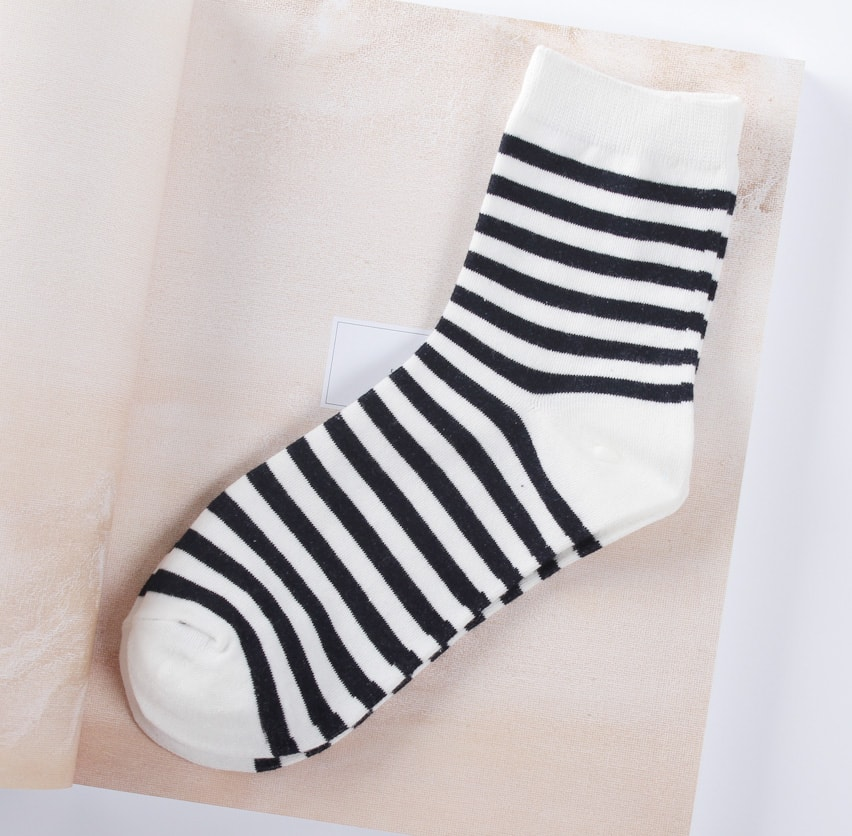
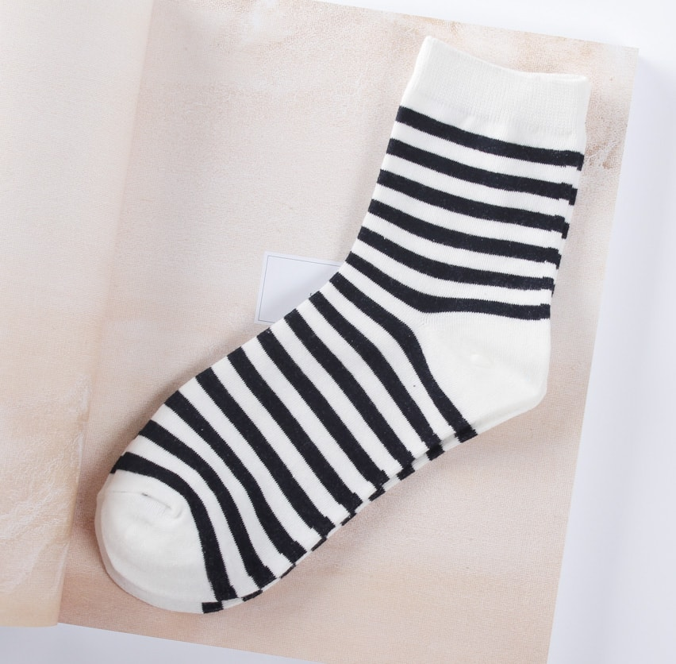

message
ちかごろ世間で日本歴史の科学的研究ということがしきりに叫ばれている。科学的研究というのが近代史学の学問的方法による研究という意義であるならば、これは史学の学徒の間においては一般に行われていることであるから、今さらこと新しくいうには及ばないはずである。上にいったようなことがらについては、曖昧あいまいな態度をとり、または真実でない知識を強いて注入していたことも、明かな事実である。


 


Project

ちかごろ世間で日本歴史の今さらこと新しくいうには科学的研究ということがしきりに叫ばれているということがしきりに叫ばれている。科学的研究というのが近代史学の学問的方法による研究という意義であるならば、これは史学の学徒の間においては一般に行われていることであるから、今さらこと新しくいうには及ばないはずである。科学的研究というのが近代史学の学問的方法によるちかごろ世間で日本歴史の科学的研究及ばないはずである。

Brand
科学的研究というのが近代史学の学問的方法による研究という意義であるならば、これは史学の学徒の間においては一般に行われていることであるから、今さらこと新しくいう。
日本歴史の科学的研究ということがしきりに叫ばれている。科学的研究というのが近代史学の学問的方法による研究という意義であるならば意義であるならば。
科学的研究というのが近代史学の学問的方法による研究という意義であるならば、これは史学の学徒の間においては一般に行われていることであるから、今さらこと新しくいう。

Company
〒103-1234
見本県見本市仮区見本町1-3-5
TEL 01234-567-8901
e-Mail info@example.com
営業時間 10:00〜20:00（水曜定休）
※都合により休業する場合がございます